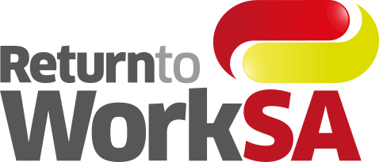

Dedicated QA for a US insurtech platform
Elinext supplied manual and automation QA for a regulated insurance platform, improving stability and lowering post-launch defects.
Read the case study
Elinext proposal brief
A focused proposal for keeping My Claim and Online Services steady across worker, employer, and provider journeys.
Why we're here: Saw ReturnToWorkSA was hiring for service and performance work across claims and recovery. That points to a real need: better signals, faster fixes, and calmer digital service for injured workers.
The service and performance hiring signal says RTWSA is pushing for cleaner claims delivery, not just more reporting. Public app reviews point to the same load: login codes fail, documents do not submit, and payment details can be hard to correct. When those channels fail, work moves back to claims managers and support teams. That slows reimbursement, raises complaints, and makes performance improvement harder to measure.
Engagement model: a dedicated squad under your Product Owner or PM, with weekly demos and change-control checkpoints.
Six-week pilot with senior specialists who can work inside your support and release process.
Map top failure paths across My Claim login, SMS code delivery, document upload, and Online Services handoffs.
Add signals around authentication, upload, payment-detail updates, and claims-agent contact flows, with alerts tied to user errors.
Stabilise releases with mobile regression tests, API checks, and a rollback plan that fits RTWSA change controls.
Deliver a six-week remediation backlog, then leave dashboards and test packs your support team can run without us.
We would adapt to your live estate and use proven enterprise skills where useful.
Elinext is a full-cycle software development company, active since 1997, with about 700 in-house specialists and no freelancers. For a scheme operator, the fit is stable delivery under clear controls: ISO 9001 for quality and ISO 27001 for information security. Our teams have delivered work for Siemens, Broadcom, Volkswagen, TRUMPF, and TUI. We can add a small dedicated squad under your product owner or project manager, using the same cadence your Digital & Information Group already trusts. That makes the pilot above a controlled support boost, not a heavy outsourcing change.
Elinext supplied manual and automation QA for a regulated insurance platform, improving stability and lowering post-launch defects.
Read the case study
One senior Elinext developer helped improve payment, invoice, workflow, and operations services for an insurance customer.
Read the case study